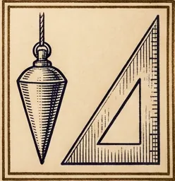

The full map
56 entries, 19 open source. Newest first. All checked Nov 24, 2026. Tap a name for its date, source and notes.
Identity
Who are you? The request carries a signed key that names the agent and its operator.
15 entries
-
Agent Passport System project
Open protocol and TypeScript SDK for agent identity, scoped delegation, enforcement before the action and signed receipts.
Note. Date is last push (GitHub API, read 2026-11-24). Apache-2.0, 67 stars.
-
C1.ai (now part of Workday) company
Agentic identity platform for people and AI agents; Workday completed its acquisition on Nov 23, 2026.
-
t54 Labs company
Identity, risk and compliance infrastructure for agents that transact; reported $5M seed (Feb 2026) co-led by Anagram, PL Capital and Franklin Templeton.
Note. Funding details come from the wetheflywheel survey, which says it checked each round against the announcement; the primary announcement was not opened.
-
AuthMind (now part of IBM) company
Identity observability company that maps how human, machine and agent identities use credentials; acquired by IBM in November 2026.
-
IBM Agent Identity (HashiCorp Vault) product
IBM's approach to registering agents, delegating authority, authorizing access and auditing agent actions on HashiCorp Vault, extended by the AuthMind acquisition.
-
Descope Envoy product
Delegated sign-in path for personal AI agents on consumer sites, with granular permissions and out-of-band approval; launch partners include GoFundMe, You.com, GoodRx and Composio.
-
Beltic company
Know Your Agent platform that verifies agents visiting a business and checks actions against the business's rules; $7.3M seed led by Norwest.
-
Baselayer Agentic Identity Suite company
Business-identity company that added Know Your Agent, Counterparty Verification and a Trusted Registry for agents; raised a $35M Series A led by M13.
-
Astrix Security (now part of Cisco) company
Security for AI agents and non-human identities (service accounts, API keys, OAuth tokens); acquisition closed by Cisco on June 29, 2026.
Note. Closing date from NHI Governance; Cisco's own announcement page (blogs.cisco.com) exists but was not opened. Reported price (~$400M, Calcalist) is not asserted here.
-
Solana Agent Registry project
Solana's implementation of ERC-8004 identity, reputation and verification registries for agents.
Note. Reported by ChainCatcher via KuCoin; primary Solana post not opened.
-
Accountable Agents Framework (AAF) standard
Proposed blueprint for privacy-preserving, directory-issued agent IDs that tie an agent to an accountable person or organization; a paper, not a deployed service.
Note. Paper exists and was read via search summary. A Nov 24, 2026 launch date appears only in an X trending summary, so it is NOT used here.
-
AGNTCY project
Linux Foundation project for agent discovery (Directory), identity, messaging and observability; Directory and Identity are Apache-2.0.
Note. LF press date not captured; repos agntcy/dir (last push 2026-11-24) and agntcy/identity (2026-10-07).
-
ERC-8004: Trustless Agents standard
Ethereum standard defining on-chain Identity, Reputation and Validation registries so agents can be discovered and assessed across organizations.
Note. Publish date not captured. The 8004.org learn page notes the Validation Registry was not yet available when read; status may have changed.
-
KYAPay (Skyfire) protocol
Open JWT protocol with identity, payment and combined tokens so sellers can verify an agent and its pre-authorized payment.
Note. Docs read Nov 24, 2026; docs show no publish date.
-
Okta for AI Agents and Cross App Access (XAA) product
Okta product line for registering agents, governing their access and issuing short-lived scoped tokens; now supports third-party identity providers via XAA.
Note. Press-release date not captured; third-party IdP support described as generally available.
No entries here match.
Auth and permissions
What may you do? The request carries a scoped grant that says what the agent may do, for whom.
9 entries
-
Casdoor project
Open-source identity and access management platform positioned as agent-first, with an LLM/MCP and agent gateway.
Note. Date is last push (GitHub API). Apache-2.0, ~14.9k stars.
-
Arcjet product
Runtime security SDK for apps and agents, including prompt-injection detection and tool-call authorization.
Note. Date is last push. Apache-2.0 SDK, 701 stars; the hosted service is a commercial product.
-
Microsoft Agent Governance Toolkit project
Open-source toolkit for policy enforcement, zero-trust identity, execution sandboxing and reliability for autonomous agents.
Note. Date is last push. MIT, ~6.6k stars.
-
Tenuo project
Open-source task-scoped authorization for agents using cryptographic warrants that constrain tools and arguments.
Note. Date is last push. Apache-2.0, 109 stars.
-
Cerbos project
Open-core authorization management platform that evaluates policy for human, service and agent identities.
Note. Date is last push. Apache-2.0, ~4.7k stars.
-
Capsule Security company
Runtime security platform that monitors agent behavior in production and enforces policy; $7M seed led by Lama Partners (Apr 2026).
-
Web Bot Auth standard
Proposal to authenticate bot and agent HTTP traffic with public-key HTTP Message Signatures (RFC 9421) and a key directory; used as the base of Visa and Mastercard agent protocols.
Note. Source date is the Cloudflare/Visa/Mastercard announcement post-date per Cloudflare press release; reference code at github.com/cloudflare/web-bot-auth (Apache-2.0, pushed 2026-11-24).
-
Akamai Web Bot Auth verification product
Akamai verifies Web Bot Auth signatures at the edge and classifies validated agent traffic with customer-set allow, challenge, delay or block policies.
Note. Blog date not captured.
-
Cloudflare signed agents product
Cloudflare identifies user-directed agents whose requests carry Web Bot Auth signatures and lets site owners write rules on them.
Note. Docs page read Nov 24, 2026; no publish date.
No entries here match.
Payments and commerce
Can you pay? The request carries a payment token the merchant can check.
13 entries
What is x402? x402 is an open payment protocol built on the HTTP 402 status code, for agents and APIs. It is operational under the Linux Foundation, with 40 member organizations as of July 2026. In this map it is the payment token a merchant can check.
-
Agent402 project
Open-source project describing itself as a payment and trust layer for agents to find, pay for and verify paid calls over x402 and MPP.
Note. Date is last push; 53 stars; self-described.
-
internet-court project
Open-source skill that describes itself as a trust layer for agent-to-agent commerce with delegated permissions, x402 payments, escrow and dispute resolution.
Note. Date is last push; ~7.2k stars; license not asserted by GitHub; self-described.
-
Skyfire company
Payments and Know Your Agent tokens for agents buying content and APIs; reported $9.5M total funding (2024).
-
Visa Intelligent Commerce and Agentic Ready product
Visa program for agent-initiated payments; Agentic Ready expanded to merchants, PSPs and acquirers on Nov 17, 2026 with 140+ participants.
-
AWS Marketplace agentic payments (Bedrock AgentCore) product
AWS Marketplace now supports agents paying for x402 products through Amazon Bedrock AgentCore payments.
-
Walmart Agent Gateway product
Walmart channel for agents to shop for customers with spend limits and approvals; first live integration is Meta's Muse for Black Friday.
-
Mastercard Agent Pay for Machines product
Early-access Mastercard offering for machine-to-machine agent payments using x402-style payment-required vouchers and approved budgets.
-
x402 and the x402 Foundation protocol
Open HTTP 402-based payment protocol for agents and APIs; operational under the Linux Foundation with 40 member organizations as of July 2026.
-
Agent Payments Protocol (AP2) protocol
Protocol for securing agent-performed payments with signed Checkout and Payment Mandates and receipts; donated by Google to the FIDO Alliance.
Note. v0.2 released Apr 28, 2026; GitHub repo google-agentic-commerce/AP2 Apache-2.0, last push 2026-06-17.
-
Visa Trusted Agent Protocol protocol
Visa protocol, built with Cloudflare on HTTP Message Signatures and Web Bot Auth, that lets merchants recognize approved agents and their commerce intent.
Note. Reference repo github.com/visa/trusted-agent-protocol (license not asserted).
-
Mastercard Agent Pay product
Mastercard's agentic payments program using agentic tokens, agent registration and consumer controls; launched April 2025.
Note. Launch month from the URL path; explainer page is dated 'November, 2026'.
-
Agentic Commerce Protocol (ACP) protocol
Open protocol defining how agents create checkout sessions, exchange payment credentials and complete purchases.
Note. Repo Apache-2.0, last push 2026-07-18 (GitHub API, read 2026-11-24). Description follows the Verifiable Intent protocol-landscape page; announcement date not captured.
No entries here match.
Verification and records
Can we prove what you did? The request carries a signed receipt of what happened.
7 entries
-
Agent Trust Layer (ATL) protocol protocol
Open protocol and demo for an optional, fail-open trust consult before an agent makes an x402 payment.
Note. Date is last push; MIT; 0 stars; one-developer project. Unrelated to this site.
-
Agent Execution Receipts (AER-1) standard
IETF individual Internet-Draft by B. Zambo defining signed execution receipts for agent tool calls so a third party can recompute and check them.
Note. Date is the draft date stated in the author's own post (draft-zambo-aer1-26); the author discloses they work for the origin product. IETF datatracker page not opened.
-
Verifiable Intent standard
Draft SD-JWT credential format that binds an agent's purchases to the user's stated intent and limits; AP2-compatible and being donated to FIDO.
Note. Spec version 0.1-draft dated 2026-02-18. Google's Apr 28, 2026 post says it is being donated to FIDO.
-
Aweb Agent Receipts protocol
Open-source draft spec for scoped execution grants, tool manifests and signed action receipts for agents that call MCP tools and APIs.
Note. Spec says it is a public draft not yet submitted to a standards body; date not captured.
-
EDAMAME company
French security company that monitors AI agents from outside the agent and describes itself as 'the AI agent trust layer'.
Note. Homepage title read 2026-11-24. The Nov 5, 2026 AWS Marketplace post is on LinkedIn, not re-opened tonight, so not asserted.
-
OVERT standard standard
Standard (v1.1) for producing independently verifiable evidence that runtime AI controls ran as declared, without exposing protected content.
Note. Publication month not captured in the excerpt read.
-
Salesforce Einstein Trust Layer product
Salesforce's built-in layer for Agentforce covering grounding, data masking, prompt-injection and toxicity defenses and audit logs; a different use of 'trust layer' (LLM data protection).
Note. Listed to show the other meaning of the phrase. Docs date not captured.
No entries here match.
Deals in the map (7)
-
CrowdStrike to acquire Zscaler deal
Definitive all-stock agreement valuing Zscaler at about $43.9B, pitched as zero trust for AI and agentic applications.
Note. Announced, subject to closing conditions.
-
Workday completes C1.ai acquisition deal
Workday completed its acquisition of agentic identity platform C1.ai.
Note. Terms not captured.
-
IBM acquires AuthMind deal
IBM acquired identity-observability company AuthMind to extend HashiCorp Vault agent identity; terms undisclosed.
-
Beltic $7.3M seed deal
Beltic emerged from stealth with a $7.3M seed round led by Norwest for agent verification.
-
Baselayer $35M Series A deal
Baselayer raised $35M led by M13 to extend its identity network to AI agents.
-
Cisco completes Astrix Security acquisition deal
Cisco closed its acquisition of agent and non-human identity security company Astrix on June 29, 2026.
-
Capsule Security $7M seed deal
Capsule Security launched from stealth with a $7M seed led by Lama Partners alongside Forgepoint Capital International.
No entries here match.

The specs underneathA filled dot marks the gate where a spec is listed. A ring marks another gate that its own description names. The match is by keyword, so read the spec before you rely on it.
Cross-gate standards (5)
-
OpenID Foundation Agent Auth (AAuth) Working Group standard
OpenID Foundation working group on agent identity, person identity, authorization, delegation, discovery and lifecycle for agents acting across trust domains.
-
Agent Name Service (ANS) standard
Open standard for naming, registering and verifying AI agents using DNS and existing certificates; now hosted by the Linux Foundation.
-
IETF WIMSE: AI agent authentication and authorization (draft-ietf-wimse-aims) standard
Internet-Draft describing how WIMSE workload identity and OAuth 2.0 can be applied to authenticate and authorize AI agent interactions.
-
MCP Authorization (2026-07-28 spec) standard
Model Context Protocol authorization section; November 2026 docs rework makes Client ID Metadata Documents the primary client-registration method and deprecates Dynamic Client Registration.
Note. Exact merge date not captured; the PR page and a secondary write-up (vibecoding.inc) agree on the content.
-
OAuth Identity Assertion JWT Authorization Grant (ID-JAG) standard
IETF OAuth draft that lets an app or agent exchange a user's identity assertion for a scoped access token at another app's authorization server; the basis of Okta Cross App Access.
Note. Draft revision 06 seen; publish date not captured.
No entries here match.
How to read this map
What each label means
- Primary source
- The standards body, project or company published it itself.
- Secondary source
- A news site or other third party reported it.
- Vendor's own claim, or reported by the vendor
- The company describes itself. Nobody else checked it.
- GitHub repo data
- License, stars and last push come from the GitHub API. The date is the last push in UTC, so it can read a day after the check date.
- Date not captured
- The source gave no date we could confirm.
What this map is not
It does not rank, rate, certify or recommend anything. Nobody paid to be listed. Leads that no source confirms are left out.
The phrase "trust layer"
Several vendors and projects use it, for example EDAMAME, Agent402, internet-court, Agent Trust Layer (ATL) protocol. Salesforce's Einstein Trust Layer means protecting data sent to language models. This site is not connected to any of them.
Read the data yourself
entries.json and changelog.json hold the map. Agents can start at llms.txt.